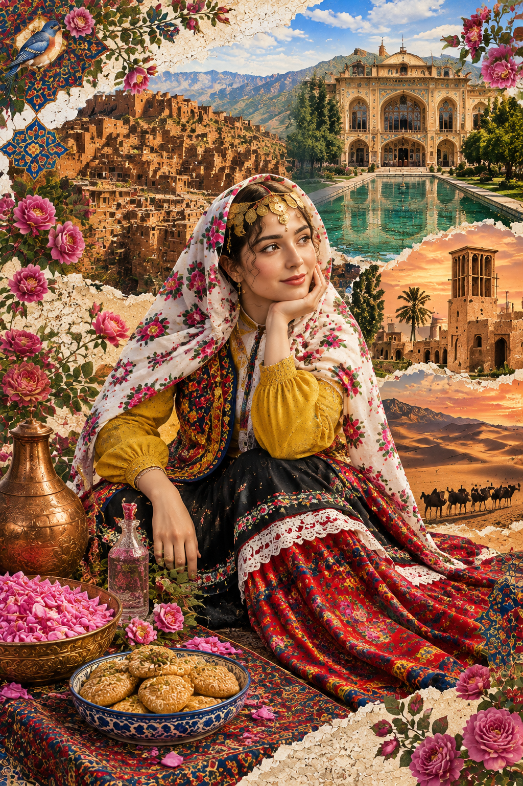
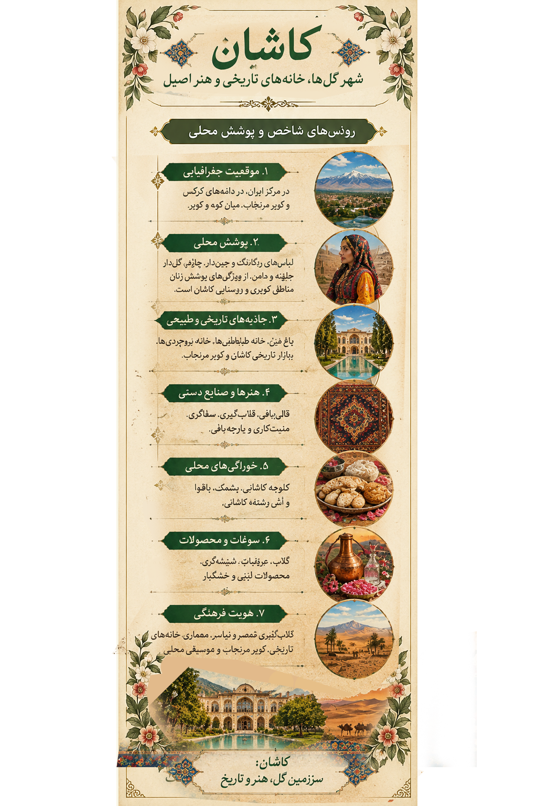

۱. تصویر کاشان؛ عطر گل و شکوه تاریخ1. Kashan in Art: Roses and Historic Grandeur

پوستر کاشان از مجموعه «ایران، هزار رنگ»Kashan poster from “Iran, A Thousand Colors”
کاشان از شهرهای تاریخی استان اصفهان و در حاشیه کویر مرکزی ایران است. خانههای تاریخی، باغهای ایرانی، بازار قدیمی، آیین گلابگیری و هنرهای سنتی، چهره فرهنگی این سرزمین را شکل دادهاند.Kashan is a historic city in Isfahan Province, near the central Iranian desert. Historic houses, Persian gardens, the old bazaar, rosewater distillation and traditional crafts shape its cultural identity.
۲. پوشش زنان کاشان؛ از شهر تا روستا2. Women’s Dress in Kashan: From City to Village

لیبل اختصاصی کاشان؛ راهنمای تصویری فرهنگ منطقهKashan exhibition label: a visual guide to regional culture
پوشاک سنتی زنان در منطقه کاشان با توجه به دوره تاریخی، محل زندگی و شیوه زندگی خانوادهها تفاوت داشته است. در گذشته، پیراهنهای بلند، شلوارهای گشاد، چارقد و پوششهای محلی سر در میان زنان منطقه رواج داشتهاند.
یکی از نمونههای شناختهشده پوشاک محلی این ناحیه را میتوان در روستای ابیانه مشاهده کرد. لباس زنان ابیانه با پیراهنهای بلند و رنگارنگ، پارچههای گلدار، دامنهای چیندار و چارقدهای سنتی شناخته میشود. این پوشش بخشی از هویت فرهنگی و تصویری متمایز این روستاست.
پوشاک ابیانه را نباید نماینده تمام زنان کاشان دانست؛ زیرا پوشش سنتی در روستاها و محلههای مختلف منطقه ویژگیهای متفاوتی داشته است.
Traditional women's clothing in the Kashan region has varied according to historical period, location and lifestyle. Long dresses, loose trousers and traditional head coverings were among the garments worn in the past. The nearby village of Abyaneh is especially known for its colorful floral dresses, gathered skirts and traditional scarves. Abyaneh's clothing represents the village's distinct identity rather than all women's clothing in Kashan.
پیراهن بلند Long Dress
پیراهنهای بلند از اجزای شناختهشده پوشاک سنتی زنان در برخی نواحی منطقه بودهاند.
Long dresses were a recognizable element of traditional women's clothing in parts of the region.
دامن چیندار Gathered Skirt
دامنهای پرچین و رنگارنگ، بهویژه در پوشش سنتی زنان ابیانه، جلوهای شاخص دارند.
Full, colorful skirts are a distinctive feature of traditional Abyaneh women's clothing.
چارقد و روسری Traditional Headscarf
پوشش سر با طرحها و رنگهای گوناگون، بخشی از ترکیب لباس سنتی زنان منطقه است.
Headscarves in different patterns and colors complete traditional outfits.
پارچههای گلدار Floral Fabrics
پارچههای نقشدار و گلدار در پوشاک سنتی ابیانه از عناصر بصری برجسته هستند.
Patterned and floral fabrics are prominent visual elements of Abyaneh traditional clothing.
۳. روستاها و نواحی فرهنگی کاشان3. Kashan’s Villages and Cultural Areas
ابیانه
روستایی تاریخی با معماری سرخرنگ، پوشاک سنتی زنان، گویش محلی و آیینهای فرهنگی ماندگار.
A historic village known for its red architecture, traditional women's clothing, local dialect and customs.
قمصر
از مراکز شناختهشده گل محمدی و گلابگیری و دارای آیینهای مرتبط با برداشت گل.
A well-known center of Damask rose cultivation and traditional rosewater production.
نیاسر
منطقهای با باغها، چشمهها، آبشار و آثار تاریخی که طبیعت و تاریخ را در کنار هم دارد.
An area of gardens, springs, waterfalls and historic sites.
برزک
از نواحی کوهستانی اطراف کاشان با باغها، محصولات کشاورزی و طبیعت دیدنی.
A mountainous area near Kashan known for its gardens, agricultural products and scenic landscapes.
۴. تاریخ، معماری، طبیعت و آیینها4. History, Architecture, Nature and Traditions
باغ فین
باغی تاریخی با معماری ایرانی، آبراهها و درختان کهن که در فهرست میراث جهانی یونسکو ثبت شده است.
A historic Persian garden with water channels and ancient trees, listed as a UNESCO World Heritage Site.
خانه طباطباییها
خانهای باشکوه از معماری دوره قاجار با حیاطهای زیبا، ارسیها و تزئینات چشمنواز.
A magnificent Qajar-era house with beautiful courtyards, stained-glass windows and intricate decoration.
خانه بروجردیها
از نمونههای برجسته معماری خانههای تاریخی کاشان با بادگیرها و نقاشیهای ظریف.
A remarkable historic mansion known for its windcatchers and delicate paintings.
مسجد و مدرسه آقابزرگ
مجموعهای تاریخی با معماری متناسب با اقلیم کویری و حیاط فرورفته و فضای چشمگیر.
A historic mosque and school with architecture adapted to the desert climate.
تپه سیلک
محوطهای باستانی و ارزشمند که از سکونتگاههای کهن فلات ایران به شمار میرود.
An important archaeological site and one of the ancient settlements of the Iranian plateau.
بازار تاریخی کاشان
بازاری قدیمی با راستهها، تیمچهها، کارگاهها و جلوههایی از تجارت و هنر سنتی.
A historic bazaar with traditional passageways, caravanserais, workshops and craft shops.
گلابگیری از شناختهشدهترین آیینهای فرهنگی و اقتصادی منطقه کاشان است. در فصل بهار، برداشت گل محمدی و تبدیل آن به گلاب، در شهرها و روستاهای اطراف کاشان انجام میشود. این سنت علاوه بر اهمیت اقتصادی، بخشی از خاطره جمعی و هویت فرهنگی مردم منطقه است.
آیینهای مذهبی، مراسم محلی، هنرهای دستی و سنتهای خانوادگی نیز در حفظ هویت فرهنگی کاشان و روستاهای پیرامون آن نقش دارند.
Rosewater distillation is one of the best-known cultural and economic traditions of the Kashan region. In spring, Damask roses are harvested and processed in the surrounding towns and villages. Religious ceremonies, local customs and traditional crafts also contribute to the region's cultural identity.
۵. خوراکیها و شیرینیهای کاشان5. Kashan’s Cuisine and Sweets
گوشت و لوبیا Meat and Beans Stew
از غذاهای مشهور کاشان که با گوشت، لوبیا و سبزیهای معطر تهیه میشود.
A famous Kashani dish prepared with meat, beans and aromatic herbs.
شفته نخودچی Shofteh Nokhodchi
غذایی سنتی با ترکیبی از گوشت و نخودچی که در سفرههای محلی کاشان شناخته شده است.
A traditional dish made with meat and chickpea flour.
آبگوشت محلی Traditional Abgoosht
از غذاهای خانگی و سنتی منطقه که با شیوههای گوناگون پخته میشود.
A traditional home-style dish prepared in different local ways.
کباب زردک Zardak Kebab
از خوراکهای محلی منطقه با ترکیبات و دستورهای متنوع خانوادگی.
A regional specialty with variations in family recipes.
باقلوا کاشان Kashan Baklava
شیرینی سنتی با لایههای لطیف و مغزهای گوناگون که در قنادیهای کاشان تهیه میشود.
A traditional layered sweet filled with nuts.
قطاب Ghotab
شیرینی مغزدار سنتی که در کنار دیگر شیرینیهای محلی در منطقه عرضه میشود.
A traditional filled pastry found among local sweets.
حاجی بادام Haji Badam
شیرینی کوچک و سنتی با طعم بادام و بافتی ترد.
A small, crisp traditional almond-flavored sweet.
گلاب و عرقیات گیاهی Rosewater and Herbal Distillates
از مشهورترین محصولات منطقه، بهویژه تولیدات قمصر و نیاسر.
Famous regional products, especially from Qamsar and Niasar.
۶. صنایعدستی و هنرهای بومی6. Handicrafts and Traditional Arts
قالیبافی Carpet Weaving
از هنرهای ریشهدار منطقه با طرحها و نقشهای سنتی.
A long-established craft featuring traditional patterns.
کاشیکاری Tilework
هنر تزئینی مهم در معماری بناهای تاریخی کاشان.
An important decorative art in Kashan's historic architecture.
زریبافی و مخملبافی Silk and Velvet Weaving
از هنرهای نساجی ارزشمند که در پیشینه هنری کاشان جایگاه دارند.
Valuable textile traditions with an important place in Kashan's artistic history.
گلابگیری سنتی Traditional Rosewater Distillation
مهارتی سنتی که با ابزارها و شیوههای بومی در فصل برداشت گل انجام میشود.
A traditional skill practiced with local equipment during the rose harvest season.